k-Day 049｜同道中人
早上出發時老闆已經和工人們忙整搬運新的木料，留下了房卡，將二十三號牽到門口。
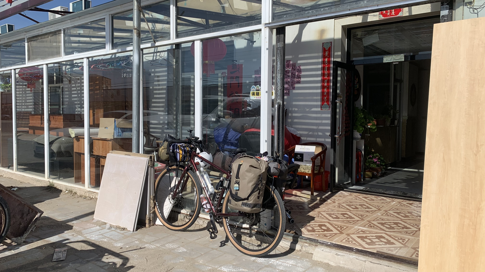
正幫二十三號打好氣，老闆走出來，指著照片左邊那塊木板笑說：「這是新的床頭飾板，是我喜歡的日式田園風。」我會想念老闆的熱情的，和老闆拍了照，心想要是以後有機會一定會再來這裡住。
鬆了三天，今天要騎到錫林浩特，路程大約120公里。想留一天參觀貝子廟，因此今天必須抵達。如果要順路去達里湖，會再增加24公里。等騎到岔路再決定吧。
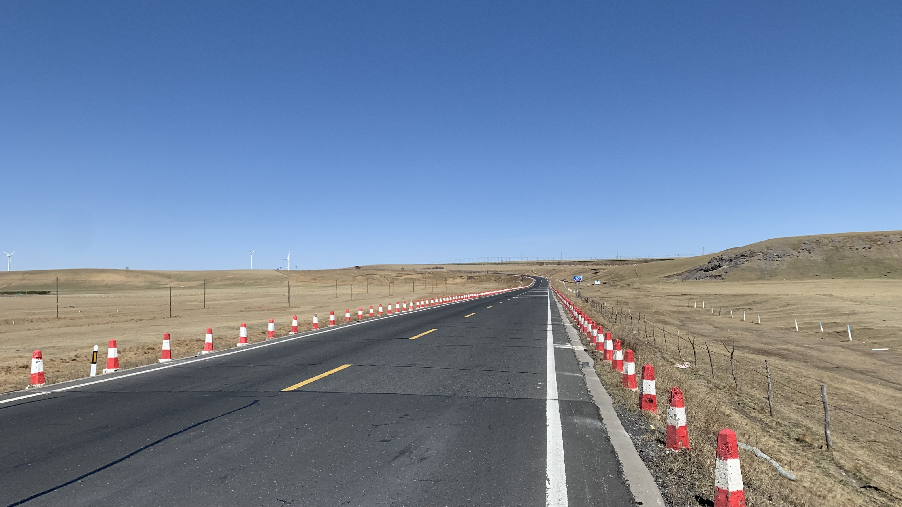
從18號翻過山開始就一直是草原的地貌。今天風不大，因此決定繞路達里湖。沒想到鄰近湖邊，竟然看到收費站，門票要45元，心在滴血。
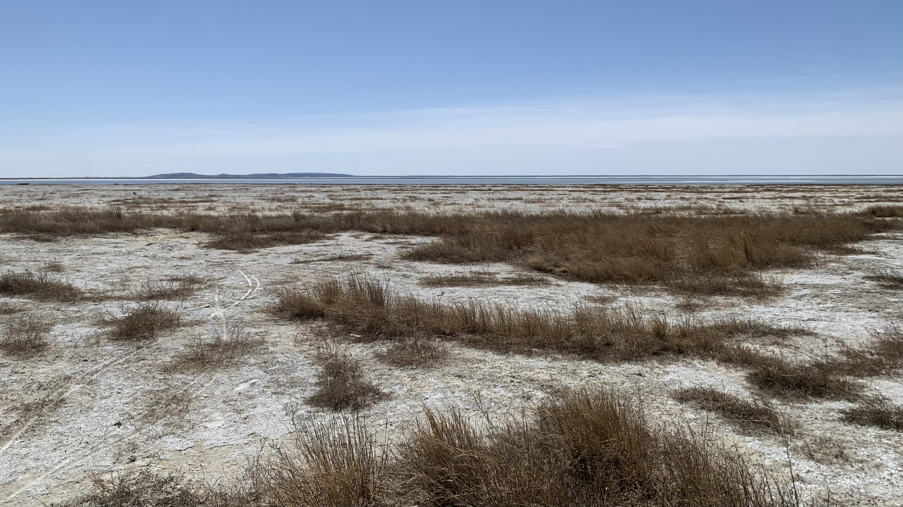
湖邊積了相當厚的鹽層，想必是被強風和烈日長時間將水分帶走，只留下礦物質的緣故，這一點只要看看我身上的衣物就有所體會。車子推到一半就陷進泥鹽裡，因此只在遠處觀賞。如果不是景區的話，在此露營肯定相當愜意。據說湖裡的華子魚在這個季節會迴游，實際上沒有看到魚群，倒是有許多像海鷗的鳥不斷在湖邊盤旋，不時襲擊水中的生物。繞了一圈，在湖邊吃了零食，12點起身繼續趕路。
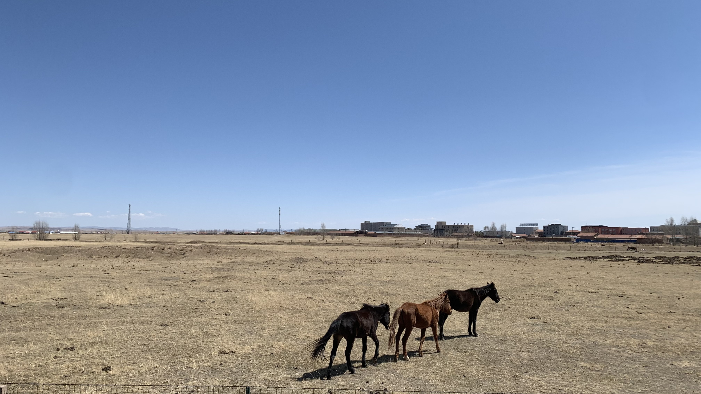
轉回國道的路上看到放養的馬兒，似乎有點瘦，也許是牧草還沒發芽。
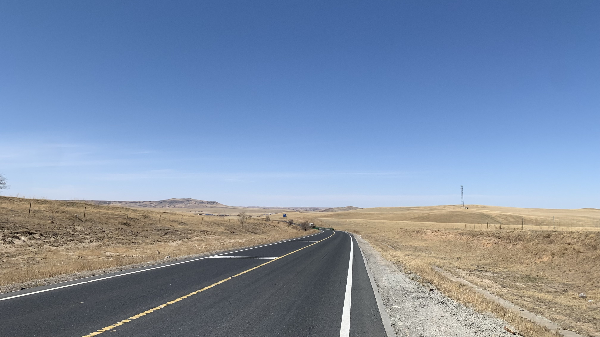
中午只吃了幾顆鵪鶉蛋和一塊巧克力，肚子很餓。
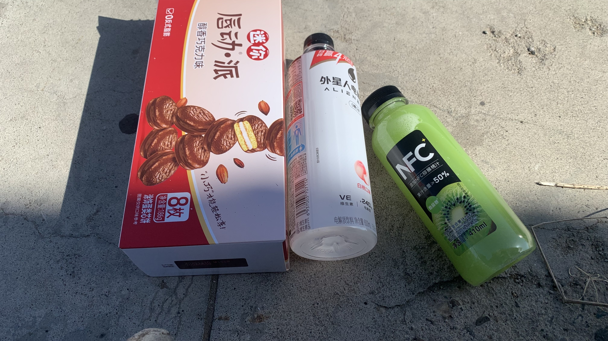
沿著草原一直騎到下午三點多，經過一家超市，趕緊買點吃喝的東西。坐在門口的水泥地上把飲料喝光，吃了幾塊巧克力派繼續趕路。
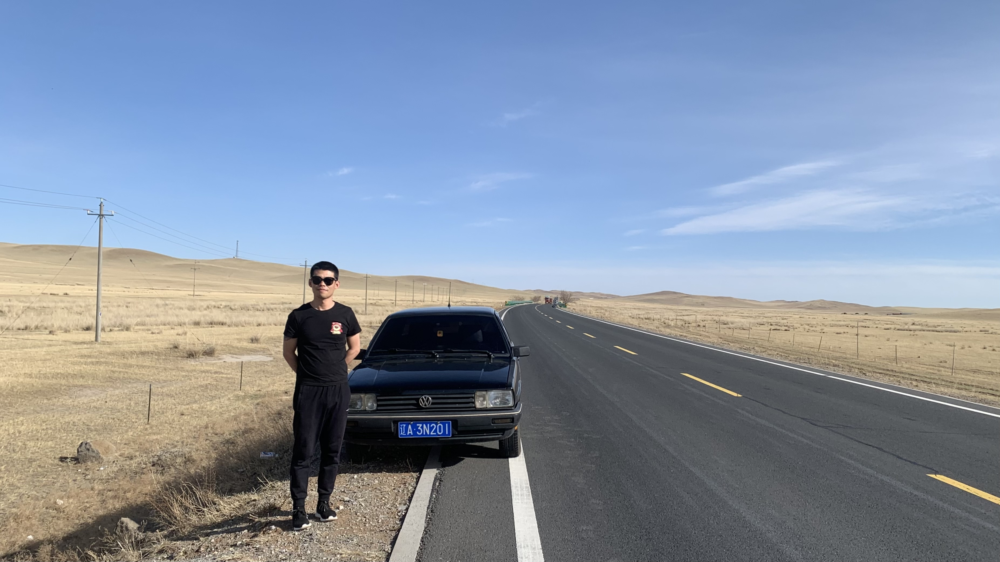
今天雖然風速減弱，但也只是比強風弱的大風。一整天下來頭已經發暈，軟軟地踩踏板。
遠處看到一輛黑色轎車停在路邊，穿著短袖的年輕人正對著遠方景色伸懶腰。心裡想著這人不冷嗎？的時候抬頭和他對上眼。
「從哪兒騎過來的？」他大喊。
「日本！」已經超車的我捏住煞車停下來，回頭喊道。
「要水還是飲料？」見他走近車門，我回「水！謝謝！」
他拿著一瓶農夫山泉走向我，並問道：「你要騎到哪裡？」我說：「法國，巴黎。」
「我去！」他一邊說一邊別過頭。
我問他要去哪，他說自己從遼寧出發，要開到新疆。
新疆？我腦中跑過準備旅程時看過的地圖，大吃一驚說：「很遠啊！你太厲害了！」
「你才厲害！」
「能給你和車照張相嗎？我想紀念一下。」「我才想給你照張相紀念。」
就這樣我拍了他的照片，他則在我後面跟著錄了一段影片，透過車窗彼此祝褔後，看著他和黑色轎車毫無障礙的爬上眼前的斜坡。
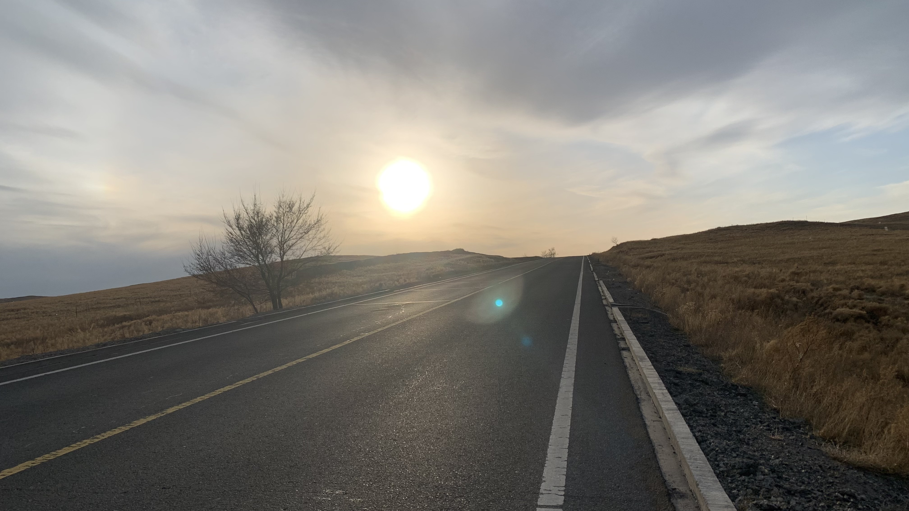
一整天都在波浪狀的山坡滾動，已經數不清越過幾座浪頭。
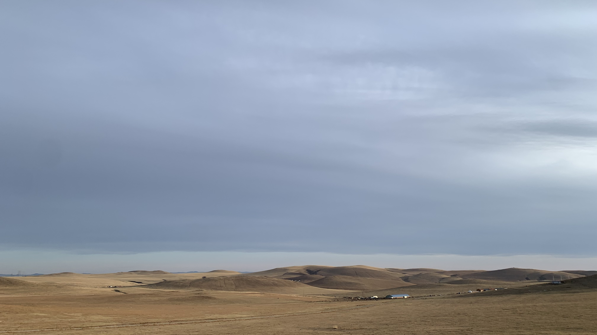
地形越拉越長，綿延不斷的滑順山坡像拉麵一樣。正這麼想著，眼前向四面八方水平延展的草坡出現奉國寺七佛起伏的手勢，產生幻覺了嗎？
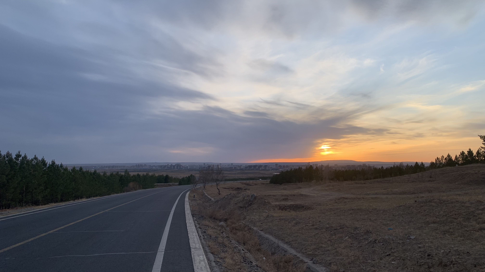
晚上六點左右終於在遠方看到錫林浩特市區。
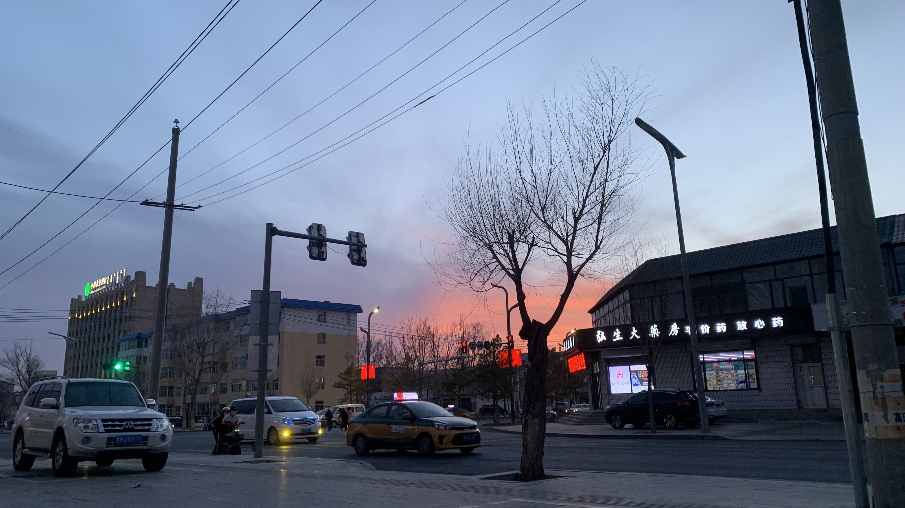
進城後已經腳軟，蹲在路邊找住處。
最後找到一間70元的酒店。前台大叔看到我奮力扛車上臺階，立馬衝出來開門。
大叔興奮的問我問題，一邊點起一支煙，雀躍的表情像蒸汽火車一樣不斷吐出煙霧。我看著大叔身後的牆上貼著一張禁止吸菸的標誌，此時的場景應該相當幽默。
「我真佩服你們這樣的。真不容易。」我和大叔說：「今天我還遇見一個年輕人，他說要開車去新疆呢！」大叔越來越開心，一邊說著「真不容易」一邊幫我提起行李往房間走
「你趕緊休息吧，有什麼需要都可以叫我。」跟大叔道謝後關上門。
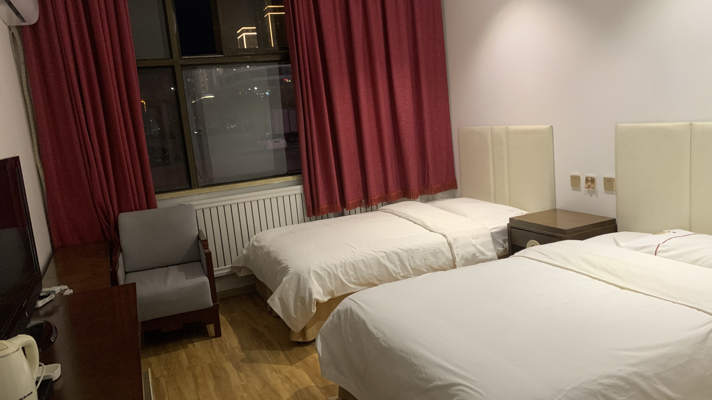
倒在床上無法動彈，用殘存的力量用美團點了一份鍋包肉和一碗小碗白飯，外加羊肉包。
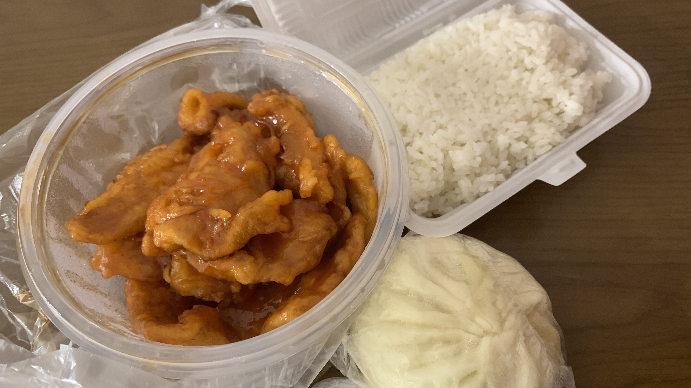
縮著身子狼吞虎嚥吃了一半，實在太飽，把肉和飯打包當作明天參觀貝子廟的午餐。
今日花費： 住宿 70元